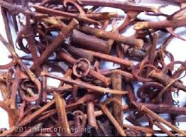

Chế độ ăn uống cho bệnh
cao huyết áp
Chế độ ăn uống cho bệnh
cao huyết áp
 Ổn định huyết áp, không phải dùng thuốc tây sau 2
tháng
Ổn định huyết áp, không phải dùng thuốc tây sau 2
tháng
Tên khác:
Câu đằng, thuần câu câu, Vuốt lá mỏ, Dây móc câu – Cú giằng (Mông); Co nam kho (Thái); Pược cận (Tày)
Tên dược: Ramulus Uncariae cum Uncis
Tên thực vật:
1. Uncaria rhynchophyllia (Miq.) Jacks.;
2. Uncaria hirsuta Havii.;
3. Uncaria sinensis (Oliv.) Havil;
4. Uncaria sessilifructus Roxb.
Tên tiếng trung: 钩藤
Cây Câu đằng
( Mô tả, hình ảnh, thu hái, chế biến, thành phần hoá học, tác dụng dược lý )
Mô tả:
Cây Câu đằng là loại cây dây leo, dài tới 7 – 8m. Lá mọc đối phiến lá hình trứng đầu nhọn, mặt trên bóng nhẵn, mặt dưới có phấn mốc, Ở kẽ lá có hai móc (giống móc câu) ở hai bên đối xứng như lá. Hoa thành hình cầu. Quả nang, trong chứa nhiều hạt.
Phân bố:
Cây câu đằng ở nước ta hiện nay vẫn chưa được trồng, mà toàn bộ nguồn đều thu từ tự nhiên. Cây thường mọc hoang ở các vùng đồi núi của các tỉnh miền núi phía Bắc như: Lào cai, cao bằng, Sơn La, Hòa Bình. Ở Hòa Bình cây mộc rất nhiều trên các vùng đồi thấp.
Thu hái chế biến:
Thân cây có gai được thu hoạch vào mùa xuân hoặc mùa thu, phơi nắng cho khô và cắt nhỏ.
Thành phần hóa học:
Thân và rễ chứa 0,041% alcaloid, trong đó hoạt chất chính là Rhynchophyllin chiếm 28,9%. Còn có các chất alcaloid khác như isorhynchophyllin, corynoxein, isocorynoxcin và một ít corynanthein, dihydrocorynanthein, hirsutin và hirsutein.
Tác dụng dược lý:
+ Tác dụng hạ áp: các loại chế phẩm và chiết xuất của Câu đằng đều có tác dụng hạ áp hòa hoãn và kéo dài. Thành phần chủ yếu có tác dụng hạ áp là chất kiềm Câu đằng. Nguyên lý hạ áp chủ yếu là thuốc trực tiếp tác dụng và phản xạ tác dụng ức chế trung khu thần kinh vận mạch và chẹn nút thần kinh giao cảm, làm giãn mạch ngoại vi nên lực cản giảm và hạ áp. Nếu đun sôi quá 20 phút tác dụng hạ áp giảm cho nên không nên đun lâu.
+ Tác dụng an thần: nước sắc Câu đằng và chiết xuất cồn thuốc trên súc vật thực nghiệm đều có tác dụng an thần rõ nhưng không gây ngủ. Cao ngâm rượu của thuốc có tác dụng chống co giật trên chuột Hà lan thực nghiệm.
+ Câu đằng còn có tác dụng ức chế cơ trơn của ruột, làm dịu cơn co thắt cơ trơn của phế quản
Vị thuốc Câu đằng
( Công dụng, Tính vị, quy kinh, liều dùng )

Mô tả dược liệu:
Dược liệu là những đoạn thân có gai hình móc câu đã phơi khô của một số loài Câu đằng (Uncaria sp.), họ Cà phê (Rubiaceae). Cây Câu đằng thường mọc hoang tại nhiều vùng rừng núi nước ta. Hiện nay trên thị trường có cả Câu đằng thu hái trong nước và nhập từ Trung Quốc, Vị Câu đằng của Trung Quốc được lấy từ cây Uncaria rhynchophylla (Miq) Jacks., vị này kích thước nhỏ hơn Câu đằng Việt Nam, nhiều móc câu, đều đặn, màu đỏ tía
Tính vị:
Ngọt, hơi lạnh
Quy kinh:
Can và tâm bào
Công dụng:
Trừ nội phong và chống co thắt, Thanh nhiệt bổ can
Liều dùng 8-16g
Thận trọng và chống chỉ định: Vị thuốc này không sắc lâu.
Ứng dụng lâm sàng của vị thuốc Câu đằng
Tác dụng chung:
 Tác dụng trấn kinh, điều trị co giật, chống động kinh
Tác dụng trấn kinh, điều trị co giật, chống động kinh
Tác dụng bảo vệ tế bào thần kinh, ngăn chặn quá trình lão hóa, đặc biệt ở người già
Tác dụng hỗ trợ điều trị bệnh Parkinson điều trị chóng mặt, hoa mắt, nhức đầu điều trị bệnh cao huyết áp rất hiệu quả
Trẻ con kinh giản
Ứng dụng lâm sàng
Can phong nội động do nhiệt thịnh biểu hiện sốt cao, co thắt và co giật
Câu đằng phối hợp với Linh dương giác, Cúc hoa và Thạch cao.
Can thận âm hư và can dương vượng hoặc nhiệt thịnh ở kinh can biểu hiện hoa mắt Chóng mặt, mệt mỏi, nhìn mờ và đau đầu.
Câu đằng phối hợp với Hạ khô thảo, Hoàng cầm, Thạch quyết minh và Cúc hoa.
Một số bài thuốc nổi tiếng có câu đằng:
Linh Dương Câu Đằng Thang (Thông Tục Thương Hàn Luận.-Du Căn Sơ)
Lương can, tức phong. Trị nhiệt thịnh sinh phong, phong dương bốc lên trên gây nên đầu váng, hoa mắt, sốt cao, co giật, hôn mê, phiền muộn
Vị thuốc: Bạch thược 12g, Bối mẫu 10g, Cam thảo . 4g , Câu đằng 12g, Cúc hoa 12g, Linh dương giác .. 4g, Phục thần .. 12g Sinh địa 16g, Tang diệp .. 12g, Trúc nhự 12g,
Sắc uống.
Câu Đằng Tán
(Chứng Trị Chuẩn Thằng. Vương Khẳng Đường)
Làm cho nhẹ đầu, sáng mắt, trị tạng can yếu.
Bán hạ (chế) 20g, Cam Cúc hoa ..20g, Cam thảo (nướng) 10g, Mạch môn (bỏ lõi) 20g, Nhân sâm .. 20g, Phòng phong 20g, Phục linh ... 20g, Phục thần .. 20g, Thạch cao .. 40g, Trần bì (bỏ xơ) ...20g,
Tán bột. Ngày uống 2 lần, mỗi lần 16g. Dùng 7 lát Gừng sống,
sắc lấy nước uống thuốc
Thiên ma câu đằng ẩm
Thiên ma 8, Câu đằng 12, Thạch quyết minh 20, Chi tử 8, Hoàng cầm 8, Ngưu tất 12, Ích mẫu 12, tang kí sinh 12, Dạ đằng giao 12, Bạch linh 12,
Cách dùng: Sắc nước uống ngày 2 lần. Tác dụng: Bình can tức Phong tư âm thanh nhiệt.
Điều trị lâm sàng: Trên lâm sàng thường để trị chứng huyết áp cao, đai đầu, ù tai, hoa mắt, mất ngủ hoặc bán thân bất tọai, lưỡi đỏ mạch “huyền” “sác”
Câu Đằng Ẩm : ( Chứng Trị Chuẩn Thằng (Ấu Khoa), Q.2 Vương Khẳng Đường) Trị trẻ nhỏ tỳ vị khí hư, mắt mỏi yếu, cơ thể nóng, chân lạnh.
Câu Đằng Tán: (Thẩm Thị Dao Hàm (Nhãn Khoa). Phó Nhân Vu) Trị mắt mỏi yếu.
Câu Đằng Cao : ( Anh Đồng Bách Vấn, Q.2. Lỗ Bá Tự) Trị nôn mửa, tỳ vị hư yếu dẫn đến chứng kinh phong mạn.
Câu Đằng Thang (Nghiệm Phương Sa Đồ Mục Tô) Trị chứng kinh phong, trẻ em co giật
Tham khảo
Tính vị qui kinh từ các sách cổ:
Sách Danh y biệt lục: hơi hàn. Sách
Dược tính bản thảo: vị ngọt bình.
Sách Thục bản thảo: vị đắng.
Sách Bản thảo cương mục: nhập thủ túc quyết âm kinh. Sách Bản thảo kinh sơ: nhập thủ thiếu âm, túc quyết âm kinh
Nơi mua bán vị thuốc CÂU ĐẰNG đạt chất lượng ở đâu?
Trước thực trạng thuốc đông dược kém chất lượng, nguồn gốc không rõ ràng,... xuất hiện tràn lan trên thị trường, làm ảnh hưởng tới hiệu quả điều trị cũng như ảnh hưởng tới sức khỏe của bệnh nhân. Việc lựa chọn những địa chỉ uy tín để mua thuốc đông dược là rất quan trọng và cần thiết. Vậy khách hàng có thể mua vị thuốc CÂU ĐẰNG ở đâu?
CÂU ĐẰNG là vị thuốc nam quý, được sử dụng rộng rãi trong YHCT. Hiện tại hầu hết các cửa hàng thuốc đông dược, phòng khám đông y, phòng chẩn trị YHCT... đều có bán vị thuốc này. Tuy nhiên người mua nên chọn những địa chỉ có uy tín, đảm bảo chất lượng, có giấy phép hoạt động để mua được vị thuốc đạt chất lượng.
Với mong muốn bệnh nhân được sử dụng những loại dược liệu đúng, chất lượng tốt, phòng khám Đông y Nguyễn Hữu Toàn không chỉ là đia chỉ khám chữa bệnh tin cậy, uy tín chất lượng mà còn cung cấp cho khách hàng những vị thuốc đông y (thuốc nam, thuốc bắc) đúng, chuẩn, đạt chuẩn chất lượng. Các vị thuốc có trong tiêu chuẩn Dược điển Việt Nam đều được nghành y tế kiểm nghiệm đạt chất lượng tiêu chuẩn.
Vị thuốc CÂU ĐẰNG được bán tại Phòng khám là thuốc đã được bào chế theo Tiêu chuẩn NHT.
Giá bán vị thuốc CÂU ĐẰNG tại Phòng khám Đông y Nguyễn Hữu Toàn: 360.000vnd/1kg
Tùy theo thời điểm giá bán có thể thay đổi.
+ Khách hàng có thể mua trực tiếp tại địa chỉ phòng khám: Cơ sở 1: Số 481 lô 22 Lê Hồng Phong, Phường Gia Viên, Thành phố Hải Phòng
Tag: cay cau dang, vi thuoc cau dang, cong dung cau dang, Hinh anh cay cau dang, Tac dung cau dang, Thuoc nam
Thaythuoccuaban.com Tổng hợp
*************************